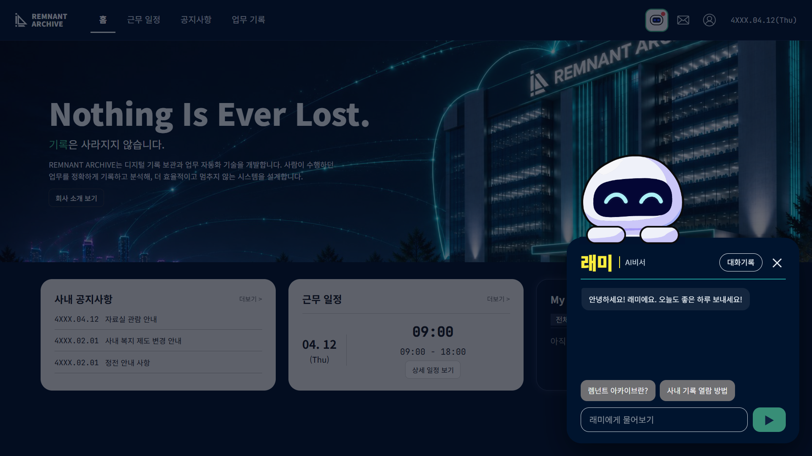
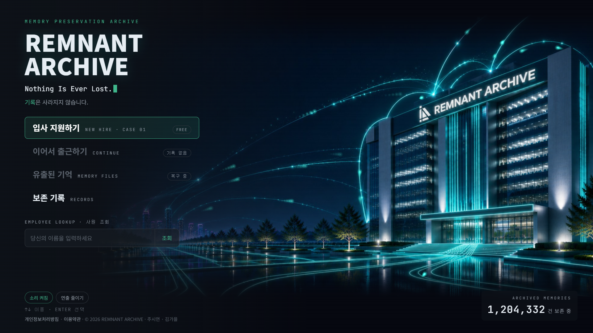
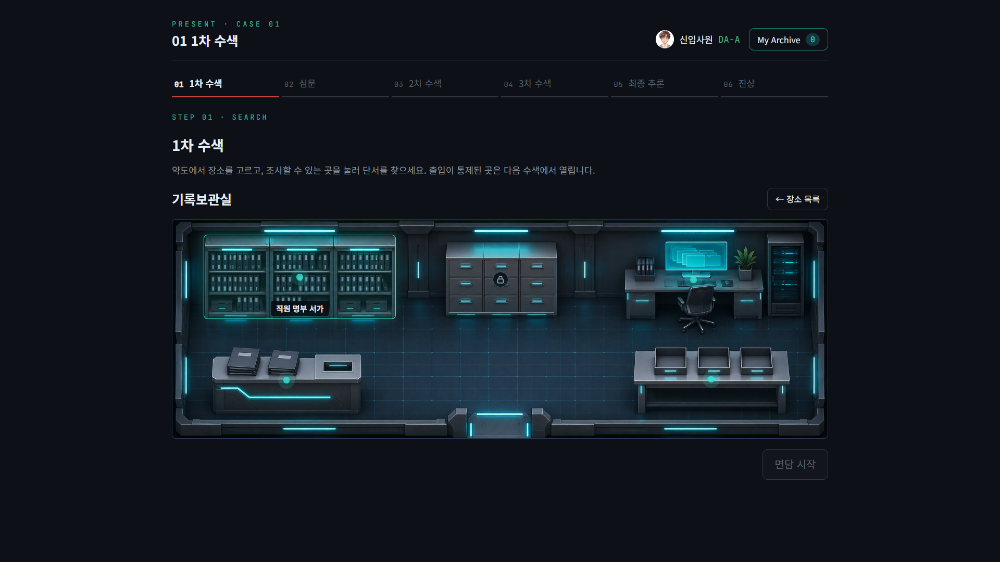
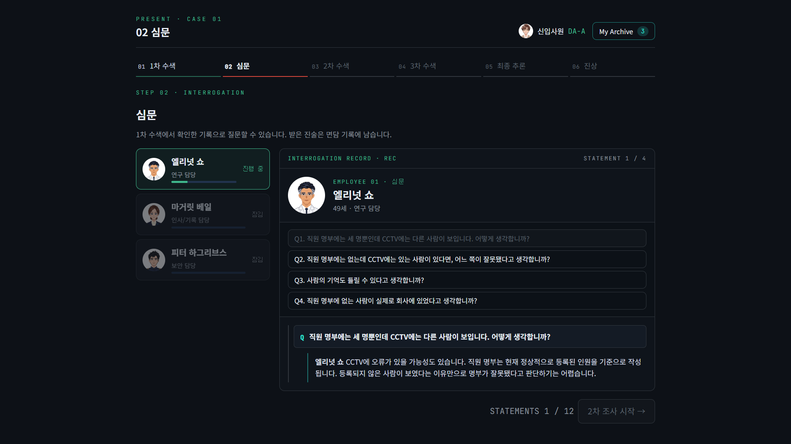
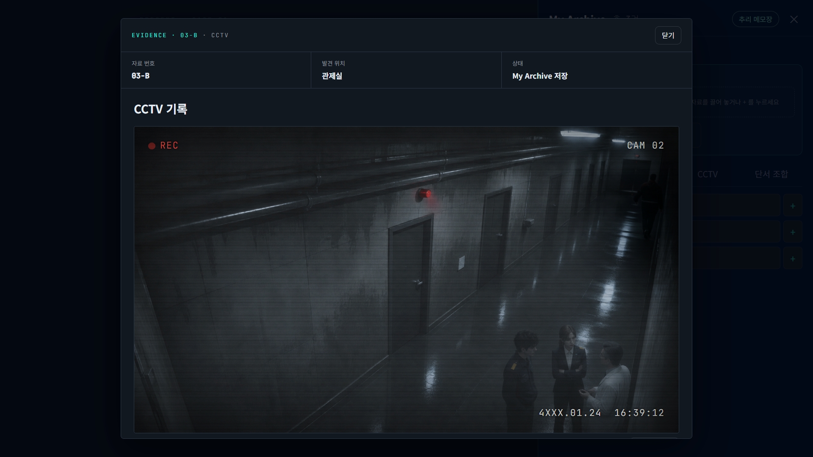
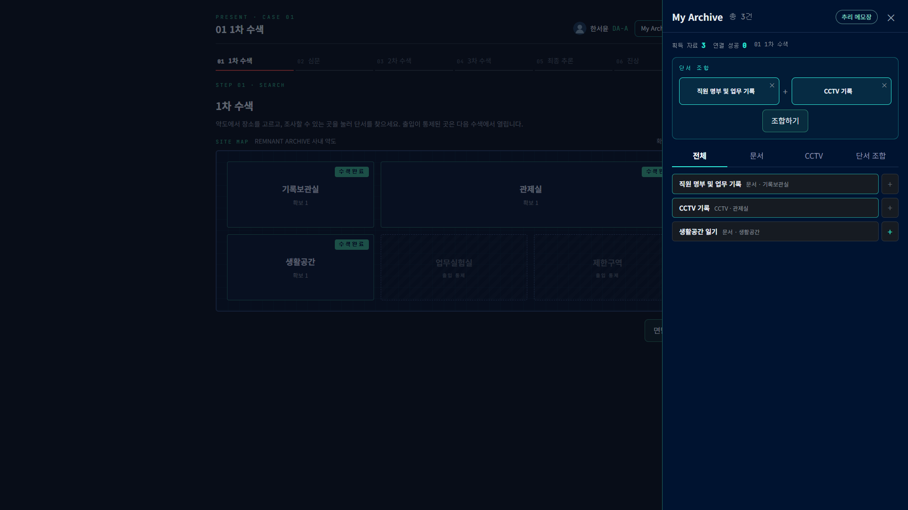
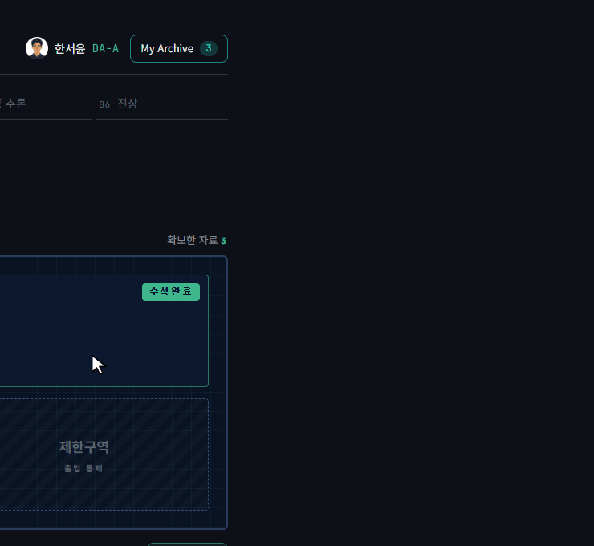
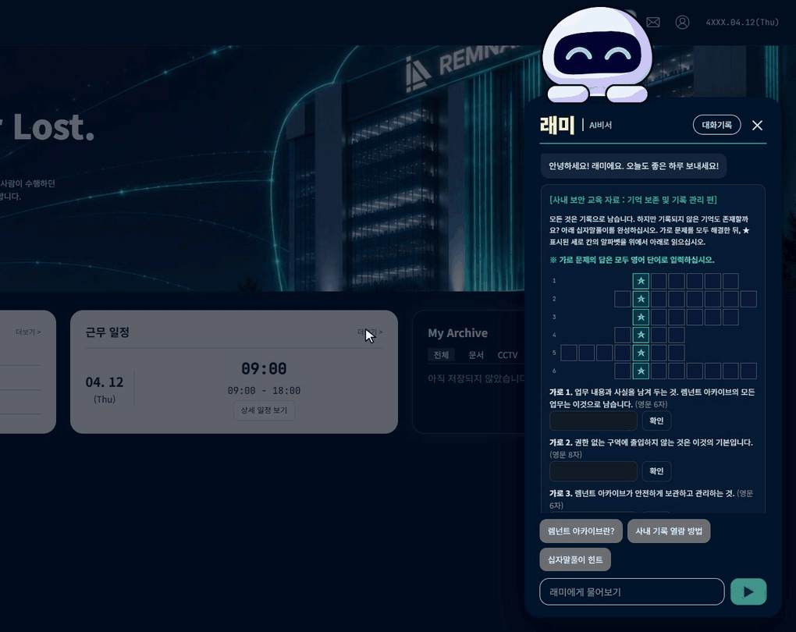

MEMORY PRESERVATION ARCHIVE
CASE 01 「신입사원」
기록은 사라지지 않습니다.
기억을 보관하는 회사에 첫 출근한 날.
회사가 보관한 기록과 직원들이 말하는 기억이 조금씩 어긋나 있습니다.
01 — WELCOME
렘넌트 아카이브는 사람의 기억을 보관하고 관리하는 회사입니다. 당신은 오늘 이 회사에 입사한 신입사원입니다.
첫 업무는 간단한 자료 정리였습니다. 그런데 사내 인트라넷을 열어 보니, 기록과 기억이 맞지 않습니다.
CCTV에는 사원 명부에 없는 사람이 찍혀 있고, 어떤 기록은 처음부터 없었던 것처럼 비어 있습니다.
당신은 사내 인트라넷에 접속할 수 있는 신입사원입니다. 그 권한으로, 아무도 묻지 않은 것을 조사하기 시작합니다.

02 — HOW TO PLAY
자료는 답을 알려 주지 않습니다. 이상한 점만 남겨 둡니다. 자료 두 장을 맞춰 보는 조합 추리로, 결론은 플레이어가 직접 만듭니다.
이름과 사원증 사진을 고르고 사내 인트라넷에 접속합니다.
AI 비서 ‘래미’의 안내를 받고, 사내 메신저와 업무 기록을 확인합니다.
사내 도면에서 장소를 골라 자료를 확보합니다.
세 명의 직원과 면담하며, 각자의 기억을 기록과 맞춰 봅니다.
보안이 걸린 구역까지 들어가 남은 자료를 모읍니다.
확보한 자료를 두 장씩 맞춰 결론을 만들고, 마지막 선택을 합니다.
03 — FEATURES
메신저, 업무 기록, 사원 조회, 보안 시스템까지 화면 안에서 동작합니다.
자료 두 장을 맞춰 새로운 결론을 얻고, 그 결론이 다음 조사를 엽니다.
연구·인사·보안. 셋 다 거짓말을 하지는 않습니다. 그런데 말이 맞지 않습니다.
무엇을 어디까지 알아냈는지에 따라 마지막이 달라집니다. 놓친 자료는 등급(INCOMPLETE / PARTIAL / COMPLETE)으로 남습니다.
04 — SCREENS
이미지를 누르면 크게 볼 수 있습니다.





05 — IN MOTION
조사 중 실제로 일어나는 장면입니다. 이미지를 누르면 크게 볼 수 있습니다.


06 — INFORMATION
| 플레이 시간 | 1회차 약 25~35분 |
|---|---|
| 엔딩 | 3종 (+ 조사 완성도 3등급) |
| 언어 | 한국어 |
| 플랫폼 | PC 전용 · 웹 브라우저 / Windows |
| 가격 | 무료 데모 |
| 제작 | 주시연 · 김가을 |
07 — START
WINDOWS
설치가 필요 없습니다. 인터넷 연결 없이도 플레이할 수 있습니다.
08 — BEFORE YOU PLAY
09 — NEXT
이 데모에는 PRESENT · CASE 01 「신입사원」 한 편이 전부 들어 있습니다.
렘넌트 아카이브에는 아직 열리지 않은 기록이 더 남아 있습니다. 첫 화면의 [유출된 기억]은 지금 ‘복구 중’입니다.
정식 출시와 텀블벅 펀딩 소식은 공식 채널로 안내할 예정입니다.
후속 소식 확인하기